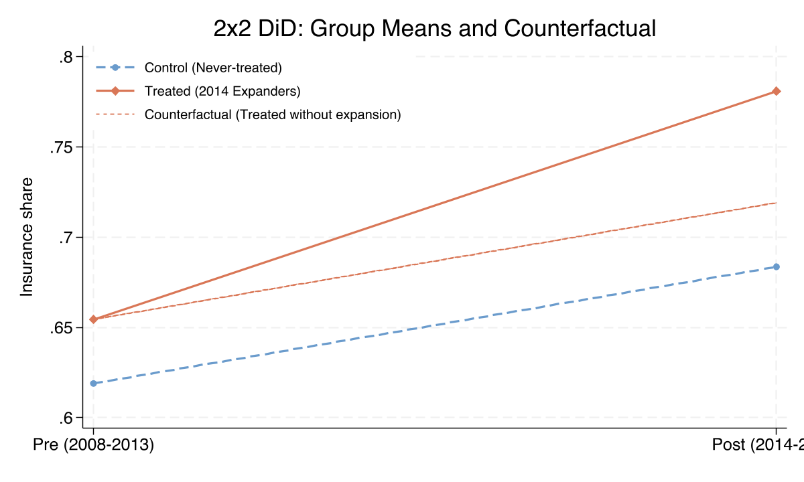
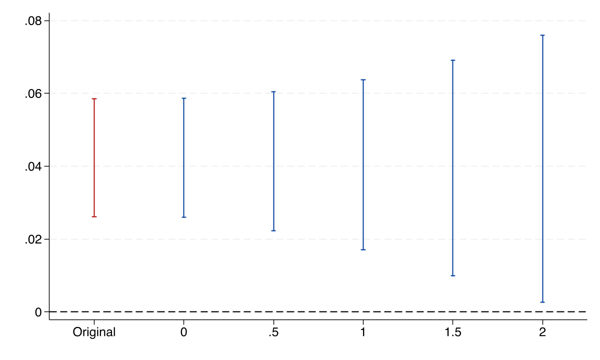
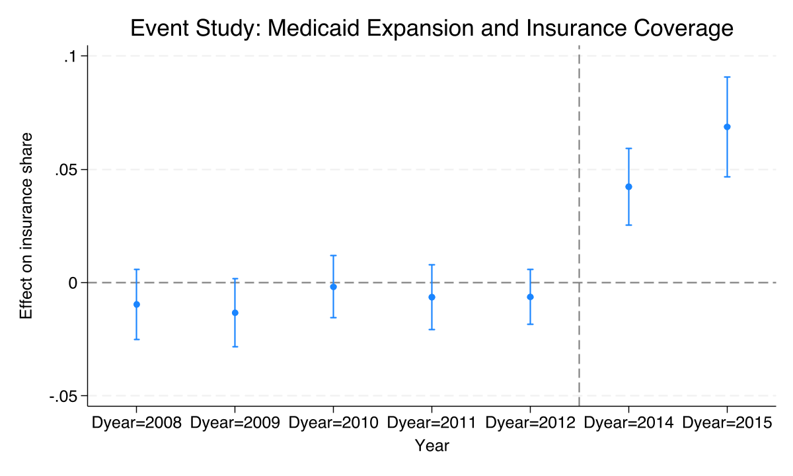
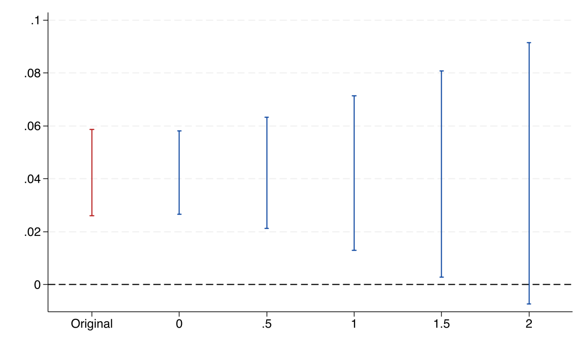
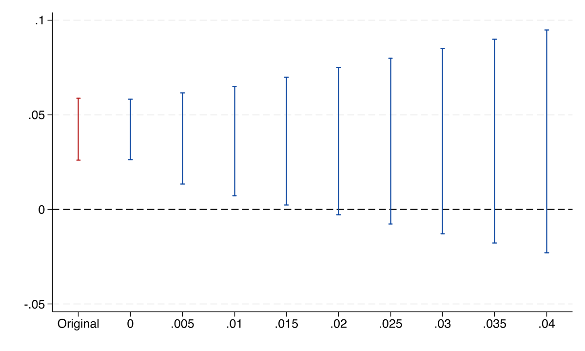
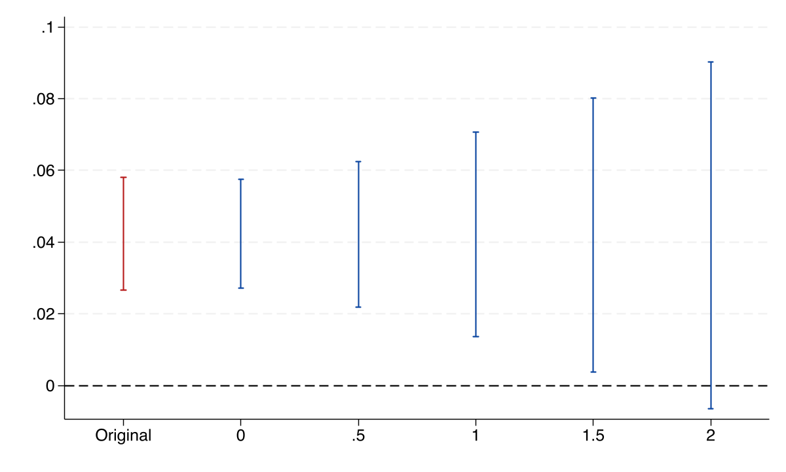

Sensitivity analysis for difference-in-differences with honestdid in Stata
Nagoya University (GSID)
June 11, 2026
Act I
Medicaid expanded in 2014. Treated states’ insurance coverage jumped — but only if they would have tracked non-expanders absent the policy.
That counterfactual is never observed. With two periods, parallel trends is fundamentally untestable. So how much should we trust the estimate?
A pre-trends test asks a binary question: reject parallel trends, or not?
Roth (2022) showed it has low power and induces pre-test bias — violations big enough to overturn the result can pass undetected. Passing the test buys false confidence.
The honestdid package (Rambachan & Roth, 2023) reframes the question.
It reports a single breakdown value: the size of a parallel-trends violation at which the confidence interval first touches zero. A quantitative robustness statistic, not a verdict.
Act II
dins, insurance coverage among low-income childless adultsObservational, not randomized: states chose to expand, so parallel trends is a genuine concern — exactly the worry honestdid quantifies.
\[Y_{it} = \alpha + \beta\,\text{Treat}_i + \gamma\,\text{Post}_t + \delta\,(\text{Treat}_i \times \text{Post}_t) + \varepsilon_{it}\]
The interaction \(\delta\) is the DiD estimate: how much the treated group’s change exceeds the control group’s change.
Control rose 6.46 pp; treated rose 12.64 pp; the difference is the policy effect.
| Quantity | Value |
|---|---|
| Treated change (65.45% to 78.09%) | +12.64 pp |
| Control change (61.90% to 68.36%) | +6.46 pp |
| DiD ATT \(\hat\delta\) | +6.18 pp |
\(t = 7.24\), \(p < 0.001\), 95% CI \([4.45,\ 7.91]\) pp · clustered on 38 states.

Group means before and after expansion. The dashed counterfactual is where treated states sit under parallel trends; the gap to the solid treated line is the 6.18 pp DiD estimate.
\[\Delta^{RM}(\bar M): \quad |\delta_t^{\text{post}}| \;\le\; \bar M \cdot \max_{s \in \text{pre}} |\delta_s|\]
Set \(\bar M = 1\) and the post-treatment violation may be as large as the worst pre-treatment deviation; \(\bar M = 2\) allows twice that.
We never observe the true \(\delta_s\) — the package uses the estimated pre-period coefficients and their uncertainty to build valid CIs.

Robust CI under relative magnitudes vs \(\bar M\). The interval widens as we relax parallel trends but never crosses zero through \(\bar M = 2\).
| \(\bar M\) | lower bound | upper bound |
|---|---|---|
| 0.0 | 0.026 | 0.059 |
| 1.0 | 0.017 | 0.064 |
| 2.0 | 0.003 | 0.076 |

Event-study coefficients, 2008-2015. Pre-treatment leads hover near zero; 2014 and 2015 jump sharply to +4.23 and +6.87 pp.
\[\Delta^{SD}(M): \quad \big|(\delta_{t+1}-\delta_t)-(\delta_t-\delta_{t-1})\big| \;\le\; M \quad \text{for all } t\]
Relative magnitudes is a speed limit on the violation; smoothness is an acceleration limit — the trend may drift, but not lurch.
Needs \(\ge 2\) pre-periods (three points define one acceleration) — unavailable in the 2x2, unlocked by the full panel.
Act III
M-bar 1.5-2
breakdown value under \(\Delta^{RM}\) · the post-violation must exceed ~2x the worst pre-deviation to overturn the result

Relative magnitudes with five pre-periods. The CI steadily widens; the lower bound passes through zero between \(\bar M = 1.5\) and \(2\).
| \(\bar M\) | lower bound | upper bound |
|---|---|---|
| 1.0 | 0.013 | 0.071 |
| 1.5 | 0.003 | 0.081 |
| 2.0 | −0.007 | 0.091 |
M 0.015-0.02
breakdown value under \(\Delta^{SD}\) · measured in the outcome’s own units (insurance share)

Smoothness restriction: robust CI vs \(M\). The lower bound crosses zero near \(M = 0.02\).
| Restriction | Parameter | Breakdown | Meaning |
|---|---|---|---|
| Relative magnitudes | \(\bar M\) | 1.5-2 | post \(\le\) 1.5-2x worst pre-violation |
| Smoothness | \(M\) | 0.015-0.02 | curvature shifts \(\le\) 1.5-2 pp per period |

Relative magnitudes on Callaway-Sant’Anna (csdid) event-study estimates. The breakdown again lands between \(\bar M = 1.5\) and \(2\).
Callaway-Sant’Anna ATT agrees with TWFE here because we held a single 2014 cohort — a clean robustness check.
Objection. A breakdown value is just a sensitivity number — it cannot prove the treated and control states really were on parallel trends.
Response. Correct, and that is the point. The breakdown value says how large a violation would overturn the result; subject-matter knowledge says whether a violation that large is plausible. Sensitivity is not identification — it quantifies how much identification we need.